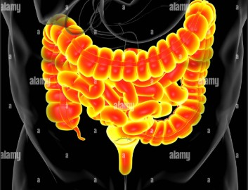

L'intestin grêle et le colon font la digestion.
La maladie de Crohn est une maladie inflammatoire chronique du tube digestif.
Elle provoque une inflammation et un épaississement de la paroi intestinale, ainsi que des ulcères et, parfois, des fissures et des perforations.
Les symptômes peuvent inclure des douleurs abdominales, des diarrhées persistantes, de la fatigue, une perte de poids et des saignements rectaux.
Le syndrome du côlon irritable (SCI), également appelé colopathie fonctionnelle, est un trouble chronique du fonctionnement de l'intestin.
Il se caractérise par des douleurs abdominales, des ballonnements, des diarrhées et/ou de la constipation.
Bien que le SCI ne soit pas une maladie grave, il peut considérablement affecter la qualité de vie des personnes qui en souffrent.